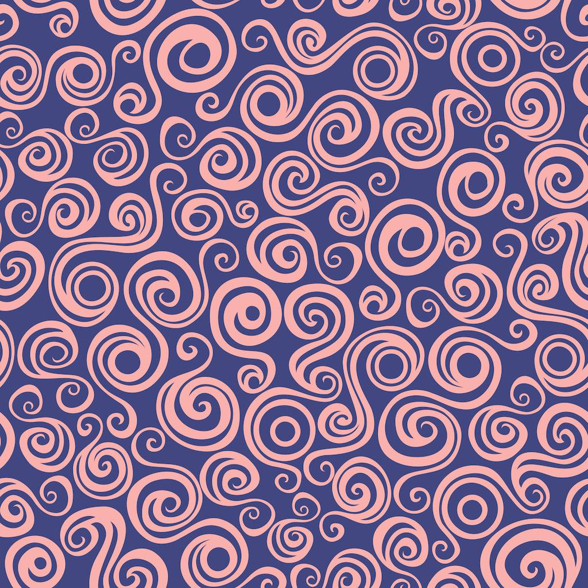
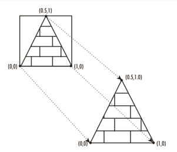

Texture mapping is choosen for this assignment. And it's a pretty simple one without considering
interpolation or anti-aliasing.
Object-drawing Issues: A tetragonal pyramid is used here to which the texture flie is mapped. It consists of
four triangles and one squre, that is to say, five vertices needed totally. A squre can be drawed using four points or using two pairs of three point sets
to draw two triangles separately.
Texture Mapping Issues: Load texture file and set texture environment firstly. To map a texture image to a surface,
the vertices of corresponding surfaces and texture image is needed. Four coordinate points (0,1),(1,1),(0,0),(1,0) are used to represent upper left, upper right, bottom
left, bottom right of texture image separately, so we can achieve the mapping procedure easily by mapping points properly(well also with the help of
gltools in fact). Below you can see the texture image used here and the pictures showing the mapping method, which can be more intuitively to understand when
showed as a picture.
You can get the source code and all the related files here: codeList.
|  |  |
 |